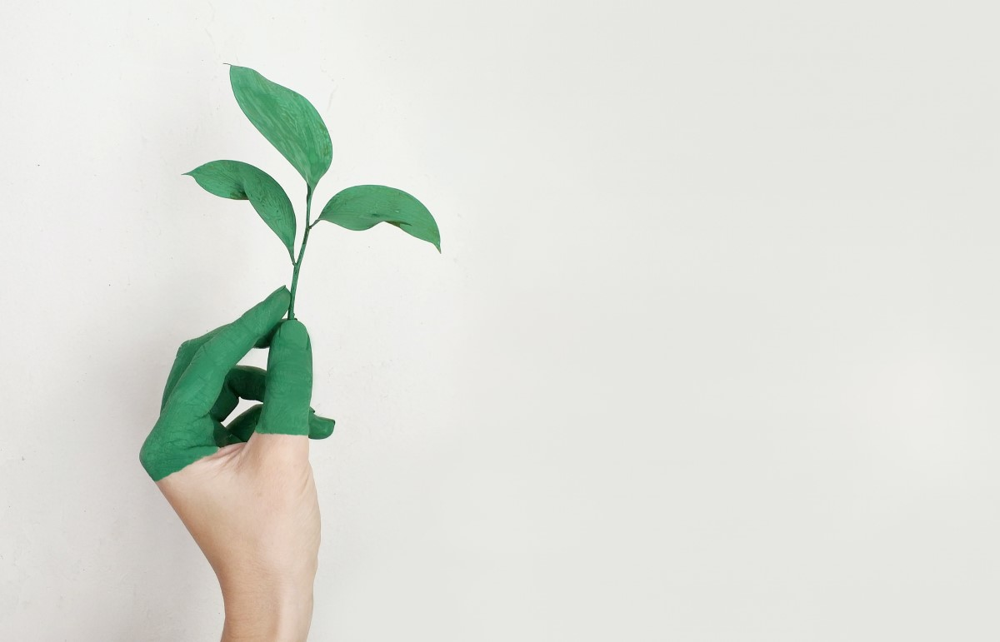

Why Eco Friendly
It is true that purchasing an eco-friendly product will cost you less
than purchasing a normal one. In this way
you will be using your money in an effective manner
Eco-friendly products for that matter guarantee you with a promise of healthier lifestyle.
It will even improve the environment and in return will provide you with ample of benefits.
They are more strong, reusable, less poisonous, less asset escalated, and more secure for the
environment, natural life, and individuals. Furthermore, you using eco-friendly items won't just
help ensure the safe planet and the wellbeing and prosperity of your friends and family yet
additionally the fate of your children.
By consuming eco-friendly items, every individual is adding to the wellbeing and protection of the
resources gave from the planet, for example, metals, plastics, and even water. On the off chance that
more individuals use eco-friendly items,
the expense of different items will go down,
and it would profit all occupants, human and animals.
Our Products
- Clothing
- Drink Bottles
- Jwellery & Accessories
- Cups
- Toothbrush and other Brushers
- Bags
- Kitchen ware
- Cosmetics
plastic, lead, and other destructive synthetics that can cause a wide range of sicknesses and infections in human body.
For grown-ups, the dangers incorporate diabetes, coronary illness, immune system infections, and conceptive framework anomalies.
For youngsters, it can cause untimely pubescence, diabetes, hindered development, and immune system issues.
Eco-accommodating, all regular items guarantee wellbeing from every single perilous substance, and permits families to evade
dangerous added substances that can cause any of these issues. Utilizing eco-friendly items improves personal satisfaction as far
as mortality, age, sicknesses, and ailments. our goal is to ensure the security of families and the planet but most importantly
to give our customers a healthy life style.